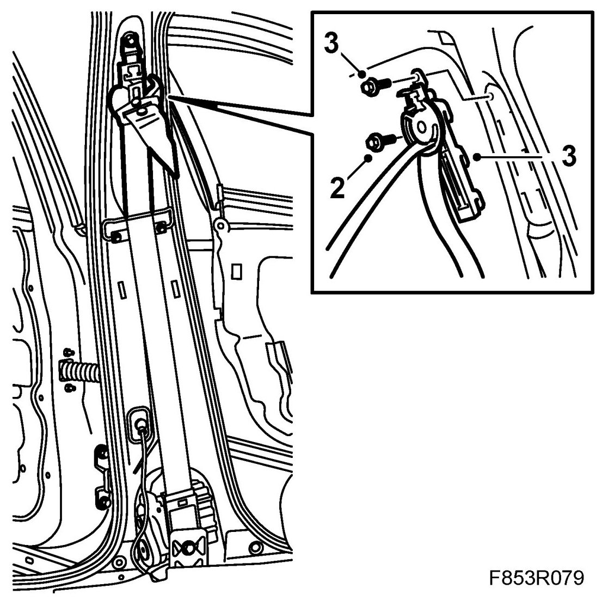
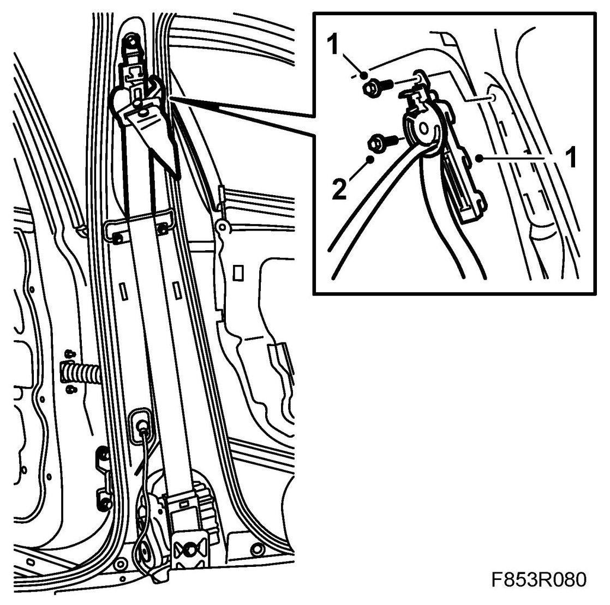

Seat Belt Height Adjuster: Service and Repair
Height Adjustment, Front
To remove
1. Dismantle the B-pillar trim.
2. Remove the strap guide screw.

3. Remove the height adjustment screw and unhook the height adjustment.
To fit
1. Put the seat belt's height adjustment into position and fit the screws.

Tightening torque 37 Nm (27 lbf ft)
2. Fit the strap guide.
NOTE: Make a note of the washer location. The washer is marked R or L depending on which side is to be fitted.
Tightening torque 37 Nm (27 lbf ft)
3 Make sure that the height adjustment is in its lowest position.
4. Fit the B-pillar trim.
5. Check the operation of the seat belt.